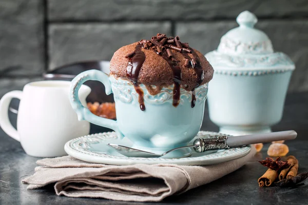

Çikolatalı Sufle Tarifi
Gerçek ve mühtiş akışkan sufle tarifi

4-6 Kişilik
Fırın Pişirme Derecesi: 210
Pişirme Süresi: 8dk
Sufle Tarifi İçin Malzemeler
- 4 adet yumurta (ikisinin sadece sarıları)
- 100 gr bitter çikolata
- 100 gr tereyağı
- 100 gr toz şeker
- 100 gr un
Sufle Tarifi Nasıl Yapılır?
- İlk önce 100 gr tereyağını ve bitter çikolatayı tavaya alalım. Kısık ateşte eriyene kadar karıştıralım. Eridikten sonra kenara alalım ılıyana kadar,
- Ardından bir kaba 2 tüm yumurta ve 2 sadece yumurta sarılarını ve toz şekerini ekleyelim ve bir mikser yardımıyla 5 dk çırpalım, ve daha sonra unu ekleyelim,
- Unu ekleyip karıştırmaya devam edin, diğer taraftan ılıyan çikolata karışımını bu hamura ekleyelim ve biraz daha karıştırdıktan sonra, yaklaşık 1 saat boyunca buzdolabında bekletelim
- 1 saat sonra sufle kalıbımızı sıvı yağ ile yağlayalım ve sufle hamurumuzu alıp kaşık yardımıyla 6 sufle kalıbına bölelim, sufle hamurun buzdolabında sertleşmiş olduğunu göreceksiniz,
- Daha önceden ısıtılmış 210° lik fırına 8 dk yı geçmeyecek şekilde pişirin. Daha sonra çıkarıp üzerine pudra şekeri serpip servis edin afiyet olsun